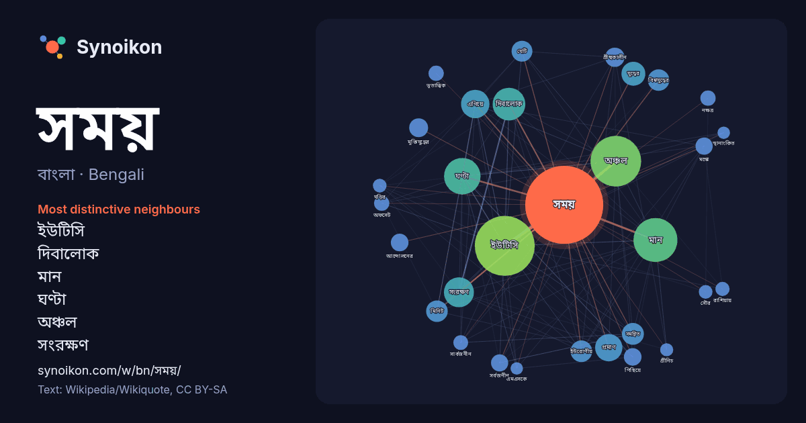

বাংলা · Bengali · word of the day list
সময়
“time” · The words found around it in 1675 instances from Bengali Wikipedia, Wikiquote.

Most distinctive neighbours
- ইউটিসি 148×
- দিবালোক 59×
- মান 43×
- ঘণ্টা 40×
- অঞ্চল 36×
- সংরক্ষণ 30×
- এগিয়ে 23×
- সমন্বিত 22×
- মিনিট 19×
- বিশ্বযুদ্ধের 18×
- প্রমাণ 17×
- মুক্তিযুদ্ধের 17×
- মস্কো 17×
- সর্বজনীন 17×
- গ্রীষ্মকালীন 16×
- পিছিয়ে 16×
- অফসেট 15×
- নক্ষত্র 14×
- ইউরোপীয় 13×
- ভূতাত্ত্বিক 13×
× = how many times more often than in general Bengali Wikipedia text.
Most frequent neighbours
- ইউটিসি 232
- অঞ্চল 166
- মান 125
- ঘণ্টা 86
- দিবালোক 69
- সংরক্ষণ 58
- এগিয়ে 52
- ব্যবহৃত 49
- প্রমাণ 48
- পূর্ব 38
- যুদ্ধের 37
- সালের 37
- পালন 36
- দ্বিতীয় 35
- সমন্বিত 31
- ইউরোপীয় 30
- বাংলাদেশের 30
- বিশ্বযুদ্ধের 30
- মিনিট 30
- যেটি 28
In context
- তারিখ নির্ধারণ, একটি সময় ব্যবধানের স্থায়িত্ব পরিমাপ, এবং একটি কালানুক্রমিক ক্রম (ঘটনার ক্রম) স্থাপন করা। আধুনিক সময়ে, একাধিক সময় নির্ধারণ পদ্ধতিকে আনুষ্ঠানিকভাবে Wikipedia snippets · সময়
- বাংলাদেশ মান সময় (BST) হচ্ছে বাংলাদেশের সময় স্থান যেটি সারা দেশে একই এবং ইউটিসির সাথে ৬ ঘণ্টা যোগ করে পাওয়া যায় । বাংলাদেশে ২০০৯ সালে স্বল্প সময়ের Wikipedia snippets · বাংলাদেশ মান সময়
- ভারতীয় প্রমাণ সময় (আইএসটি) হচ্ছে সারা ভারতের জন্য ব্যবহৃত সময় স্থান। গ্রিনিচের সাথে এর সময় পার্থক্য ইউটিসি+৫:৩০। ভারত দিবালোক সংরক্ষণ সময় ব্যবহার করে Wikipedia snippets · ভারতীয় প্রমাণ সময়
- সময় অঞ্চল হচ্ছে পৃথিবীর উপরের এক একটি নির্দিষ্ট এলাকা যেখানকার অন্তর্ভুক্ত দেশগুলোর স্থানীয় সময় একই। পাশাপাশি দুটো সময় স্থানের সময় ব্যবধান সাধারণত Wikipedia snippets · সময় অঞ্চল
- রাশিয়ায় সর্বমোট ১১টি সময় অঞ্চল রয়েছে, যেগুলোর সময়সীমা ইউটিসি+০২:০০ হতে ইউটিসি+১২:০০। দিবালোক সংরক্ষণ সময় রাশিয়ায় ব্যবহৃত হয় না (মার্চ ২০১১ হতে)। Wikipedia snippets · রাশিয়ায় সময়
- জিএমটি বা গ্রীনিচ মান সময় (ইংরেজি: Greenwich Mean Time) এক ধরনের আন্তর্জাতিক মানদণ্ডে প্রণীত সময় পদ্ধতি। এ সময় অঞ্চলটি যুক্তরাজ্য,আয়ারল্যান্ড, পর্তুগালসহ Wikipedia snippets · গ্রিনিচ মান সময়
- কেন্দ্রীয় ইউরোপীয় সময় (সিইটি), ইউরোপের বেশির ভাগ অঞ্চল ব্যবহার করা হয়। এটি সময় অঞ্চল নামগুলোর একটি যা ১ ঘণ্টা আগে স্থানাংকিত আন্তর্জাতিক সময়ের (ইউটিসি) Wikipedia snippets · মধ্য ইউরোপীয় সময়
- ইরান মান সময় (আইআরএসটি) বা ইরান সময় (আইটি) হলো ইরানে ব্যবহৃত সময় অঞ্চল। ইরান একটি ইউটিসি অফসেট ইউটিসি+০৩:৩০ ব্যবহার করে। আইআরএসটিকে ৫২.৫ ডিগ্রি পূর্ব Wikipedia snippets · ইরান মান সময়
More Bengali words
- অরণ্য
- আয়না
- ইতিহাস
- ঈশ্বর
- কাজ
- কুকুর
- ক্ষমতা
- খাদ্য
- গান
- গ্রীষ্ম
- ঘড়ি
- ঘণ্টা
- ঘোড়া
- ছায়া
- জননী
- জলবায়ু
- জীবন
- ঝড়
- টাকা
- ট্রেন
- দারুচিনি
- দ্বীপ
- নক্ষত্র
- নীরবতা
- পরিবার
- পানি
- পাহাড়
- প্রকৃতি
- বাগান
- বিজ্ঞান
- বিড়াল
- বৃষ্টি
- ভাষা
- মধু
- মরুভূমি
- মানচিত্র
- মৃত্যু
- রাস্তা
- রুটি
- লবণ
- শরৎ
- শহর
- শিল্প
- শীত
- সত্য
- সেতু
- সোনা
- স্বাস্থ্য
- হৃদয়
Precomputed on 2026-10-09 with default settings (±5 words, medium corpus). The interactive map can refresh it with live data.